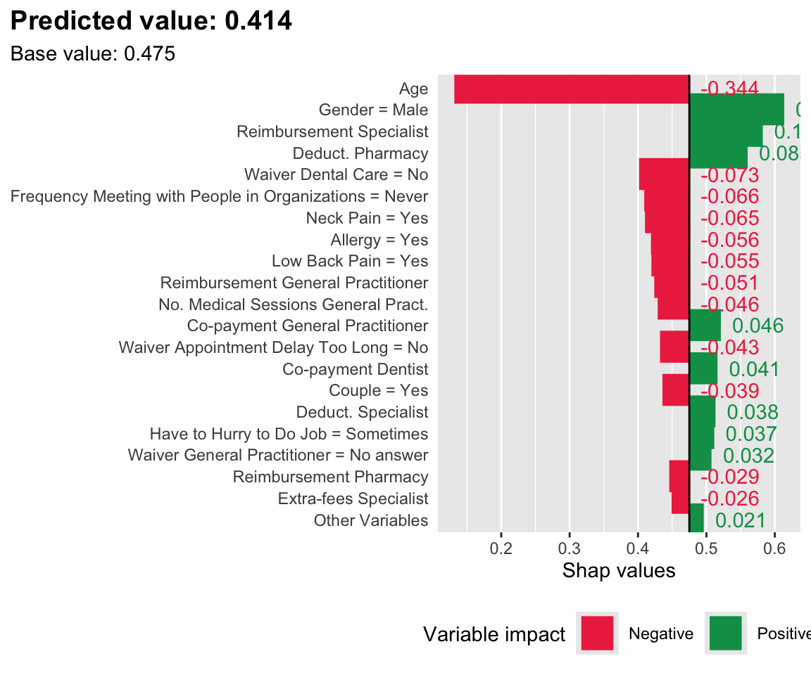
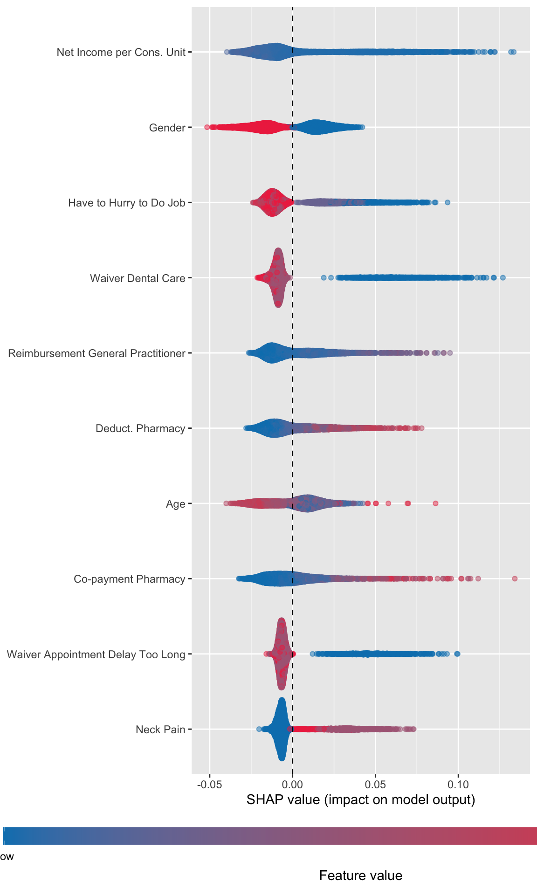
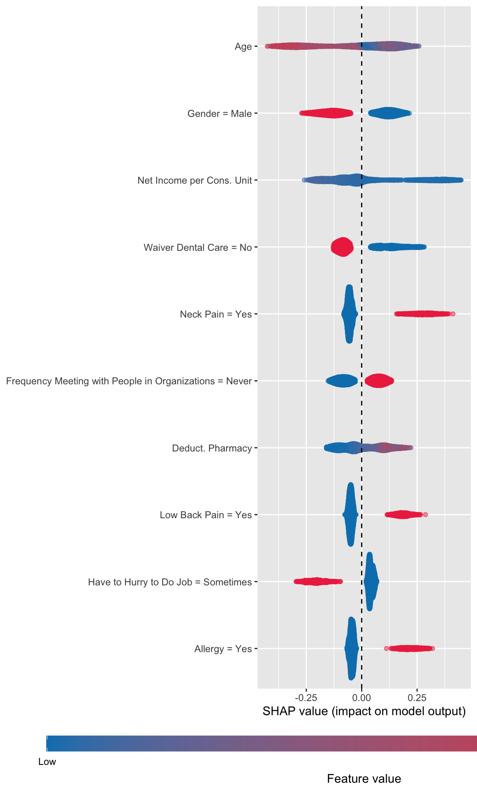
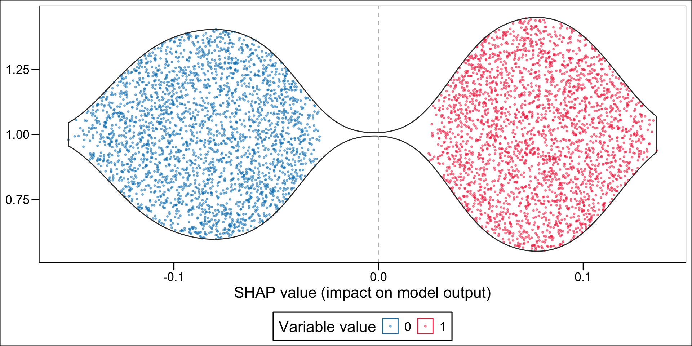
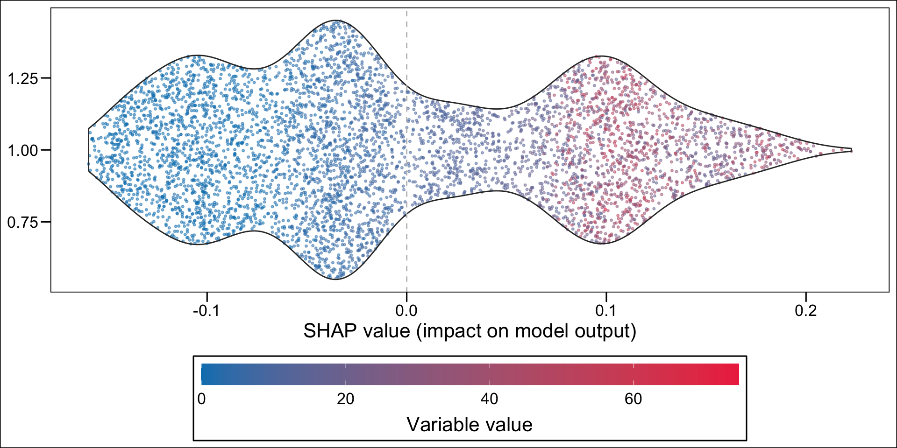
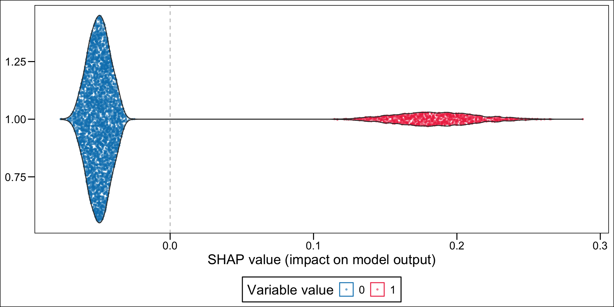
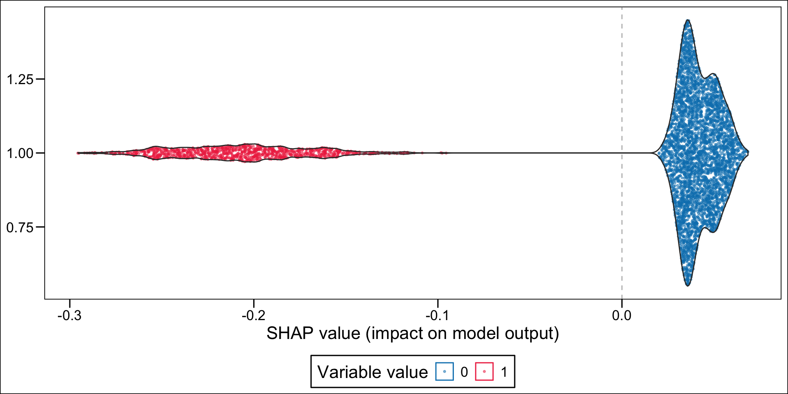
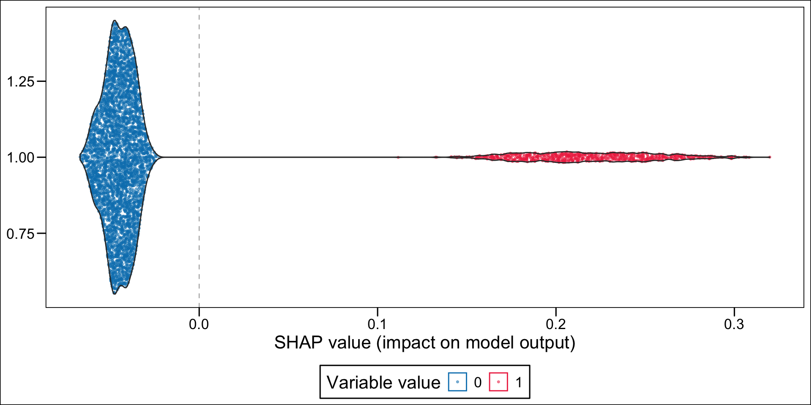
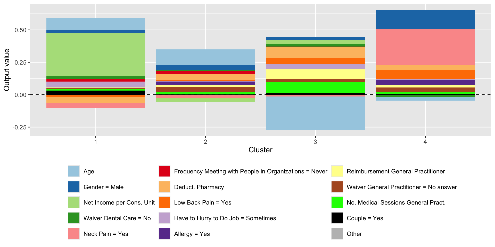

# The estimated random forests (and the grid)load("../data/out/estim/v3/grid_search_rf_sah.rda")# The estimated xgb (and the grid)load("../data/out/estim/v3/grid_search_xgb_sah.rda")
Let us get the best classifiers obtained both for the random forest and XGBoost. Let us begin with random forests:
# A tibble: 189 × 4
variable label_categ variable_raw variable_label_val
<chr> <chr> <chr> <chr>
1 PERSONNE_pb_asthmNo Asthma = No PERSONNE_pb… No
2 PERSONNE_pb_asthmYes Asthma = Yes PERSONNE_pb… Yes
3 PERSONNE_pb_asthmNo answer Asthma = No a… PERSONNE_pb… No answer
4 PERSONNE_pb_bronchitNo Bronchitis = … PERSONNE_pb… No
5 PERSONNE_pb_bronchitYes Bronchitis = … PERSONNE_pb… Yes
6 PERSONNE_pb_bronchitNo answer Bronchitis = … PERSONNE_pb… No answer
7 PERSONNE_pb_infarctusNo Heart Attack … PERSONNE_pb… No
8 PERSONNE_pb_infarctusYes Heart Attack … PERSONNE_pb… Yes
9 PERSONNE_pb_infarctusNo answer Heart Attack … PERSONNE_pb… No answer
10 PERSONNE_pb_coronairNo Artery Diseas… PERSONNE_pb… No
# ℹ 179 more rows
We define a function, plot_individual_variable_effect() to understand why, according to the estimated SHAP values, the predicted value for a single individuals deviates from the average prediction in the reference sample.
#' Plot the decomposition of the deviation from the average prediction#' for an individual, using SHAP values#' #' @param i row number to designate individual#' @param treeshap_res result obtained with treeshap#' @param predicted_val_i predicted value for the individual#' @param mean_pred_ref average predicted value in the reference data#' @param n top n variables (default to 10)#' @param min_max if not `NULL`, limits for the x axis (Shap values), in a #' vector of length 2 containing c(min, max)plot_individual_variable_effect <-function(i, treeshap_res, predicted_val_i, mean_pred_ref,n =10,min_max =NULL) { df_plot <- treeshap_res$shaps |> dplyr::slice(i) |>unlist() |>enframe(name ="variable", value ="shap") |>left_join(variable_names, by ="variable") |>left_join(variable_names_categ, by ="variable") |>mutate(label =ifelse(is.na(label), label_categ, label)) |>arrange(desc(abs(shap))) |>mutate(in_top_n =row_number() <=!!n) |>mutate(label_2 =ifelse(in_top_n, label, "Other Variables") ) |>group_by(label_2) |>summarise(shap =sum(shap),.groups ="drop" ) |>mutate(label_2 =fct_reorder(label_2, abs(shap)),label_2 =fct_relevel(label_2, "Other Variables") ) |>mutate(mean_pred_ref =!!mean_pred_ref,shap_rounded =str_c(" ", round(shap, 3)),sign =sign(shap),sign =factor(sign, levels =c(-1, 1), labels =c("-", "+")) ) p <-ggplot(data = df_plot, mapping =aes(y = mean_pred_ref +pmax(shap, 0),x = label_2,ymin = mean_pred_ref,ymax = mean_pred_ref + shap,colour = sign) ) +geom_linerange(linewidth =8) +geom_hline(yintercept = mean_pred_ref) +geom_text(aes(label = shap_rounded, hjust =0)) +coord_flip() +scale_colour_manual("Variable impact", values =c("-"="#EE324E", "+"="#009D57"), labels =c("-"="Negative", "+"="Positive") ) +labs(x =NULL, y ="Shap values", title=str_c("Predicted value: ", round(predicted_val_i, 3)),subtitle =str_c("Base value: ", round(mean_pred_ref, 3)) ) +theme(panel.grid.major.y =element_blank(), axis.ticks.y =element_blank(),legend.position ="bottom",plot.title.position ="plot",plot.title =element_text(hjust =0, size =rel(1.3), face ="bold") )if (!is.null(min_max)) { p <- p +scale_y_continuous(limits = min_max) } p}
Let us look at the first individual:
i <-1treeshap_rf_opposite <- treeshap_rftreeshap_rf_opposite$shaps <--treeshap_rf_opposite$shaps
plot_individual_variable_effect(i = i, treeshap_res = treeshap_rf, predicted_val_i =1-pred_val_rf[i], mean_pred_ref =1-mean_pred_rf_ref, n =20)
Figure 20.1: SHAP values for the first individual, when the score is estimated with a Random Forest. Positive class: Imaginary healthy patient.
plot_individual_variable_effect(i = i, treeshap_res = treeshap_xgb, predicted_val_i = pred_val_xgb[i], mean_pred_ref = mean_pred_xgb_ref, n =20)
Figure 20.2: SHAP values for the first individual, when the score is estimated with XGBoost. Positive class: Imaginary healthy patient.

Now, let us pick two individuals: one with a low predicted score, and another one with a high predicted score. We define two functions: get_top_n_indiv(), to get the top n variables explaining the deviation of the score of an individual from the average predicted score in the reference set, and get_table_charact() to extract the characteristics of specific individuals given a set of characteristics.
#' Extracts the top n variables according to absolute SHAP val#' #' @param i row number of individual#' @param treeshap_res result obtained with treeshap#' @param n top n variables (default to 10)get_top_n_indiv <-function(i, treeshap_res, n =10) { treeshap_res$shaps |> dplyr::slice(i) |>unlist() |>enframe(name ="variable", value ="shap") |>arrange(desc(abs(shap))) |>filter(row_number() <=!!n) |>pull("variable")}#' Get the characteristics of the union of top n variables among individuals#' (using abolute SHAP values)#' for xgboost only#' #' @param i row numbers of individuals#' @param treeshap_res result obtained with treeshap#' @param reference_data reference dataset#' @param n top n variables (default to 10)get_table_charact <-function(i, treeshap_res, n =10) {# Top n variables for individuals top_n_indiv <-map( i, ~get_top_n_indiv(i = .x, treeshap_res = treeshap_res, n = n) ) top_n_indiv_variables <-list_c(top_n_indiv) |>unique()# Average values for those variables in the reference sample values_reference <-model.matrix(formula, reference_data_xgb) |>as_tibble() |>select(!!top_n_indiv_variables) |>summarise(across(everything(), ~mean(.x))) |>pivot_longer(cols =everything(), names_to ="variable", values_to ="val_ref")# Characteristics for these individuals top_n_indiv_characteristics <-map2(.x = i, .y = top_n_indiv,~tibble(variable = top_n_indiv_variables, id_indiv = .x) |>left_join(model.matrix(formula, df_all_xgb) |>as_tibble() |> dplyr::slice(.x) |>select(!!top_n_indiv_variables) |>pivot_longer(cols =everything(), names_to ="variable", values_to ="value_indiv" ),by ="variable" ) |>mutate(in_top_n =ifelse(variable %in% .y, yes ="$\\checkmark$", no ="")) ) |>list_rbind() top_n_indiv_characteristics |>left_join(variable_names, by ="variable") |>left_join(variable_names_categ, by ="variable") |>left_join(values_reference, by ="variable") |>mutate(label =ifelse(is.na(label), label_categ, label)) |>select(label, id_indiv, value_indiv, in_top_n, val_ref) |>pivot_wider(names_from = id_indiv, values_from =c(value_indiv, in_top_n))}
Figure 20.3: SHAP values for an individual with a low predicted score, when the latter is estimated with XGBoost. Positive class: Imaginary healthy patient.
Figure 20.4: SHAP values for an individual with a high predicted score, when the latter is estimated with XGBoost. Positive class: Imaginary healthy patient.
We retrieve the characteristics of the identified most important variables for both individuals, as well as the average values in the reference sample (train set):
tb_two_indivs_example <-get_table_charact(i =c(i_low, i_high), treeshap_res = treeshap_xgb, n =10)
Table 20.1: Characteristics for the Most Important Variables for Two Individuals According to their SHAP Values.
label
value_indiv_111
in_top_n_111
value_indiv_125
in_top_n_125
val_ref
Net Income per Cons. Unit
3071.11
\(\checkmark\)
606.92
\(\checkmark\)
1622.82
Have to Hurry to Do Job = Sometimes
1.00
\(\checkmark\)
0.00
0.20
Gender = Male
1.00
\(\checkmark\)
0.00
\(\checkmark\)
0.47
Waiver Dental Care = No
1.00
\(\checkmark\)
0.00
\(\checkmark\)
0.66
Frequency Meeting with People in Organizations = Never
0.00
\(\checkmark\)
1.00
0.50
Very Little Freedom to Do Job = Never
1.00
\(\checkmark\)
0.00
0.21
Deduct. Pharmacy
0.50
\(\checkmark\)
9.50
12.64
Neck Pain = Yes
0.00
\(\checkmark\)
0.00
0.14
Low Back Pain = Yes
0.00
\(\checkmark\)
0.00
0.19
Waiver Appointment Delay Too Long = No
1.00
\(\checkmark\)
0.00
0.67
Age
54.00
47.00
\(\checkmark\)
47.59
No. Medical Sessions General Pract.
2.00
18.00
\(\checkmark\)
4.55
Waiver General Practitioner = No answer
0.00
0.00
\(\checkmark\)
0.21
Reimbursement Pharmacy
0.30
652.07
\(\checkmark\)
273.31
Reimbursement General Practitioner
30.20
337.10
\(\checkmark\)
83.16
Co-payment Pharmacy
1.85
251.22
\(\checkmark\)
91.03
Occupation = Administrative employee
0.00
1.00
\(\checkmark\)
0.14
20.4 Variable importance
We compute the average absolute Shap value for each variable and order the results by descending values. We filter the results to focus on the predictions of being classified as a imaginary healthy patient.
In Python, the summary_plot() function is used to offer a quick view of the effect of each variable on the prediction. We can reproduce such a plot. For quantitative variables, this type of graph seems advantageous. For quantitative variables, on the other hand, we prefer a different type of graph (see below).
Let us define a function to rescale values (min-max rescaling).
#' std1#' a function to standardize feature values into same range#' Source: https://github.com/pablo14/shap-values/blob/master/shap.Rstd1 <-function(x) { ((x -min(x, na.rm = T)) / (max(x, na.rm = T) -min(x, na.rm = T)))}
Then, we need to create a table that contains for each individual and each variable, the Shap value, and the standardized value of the characteristics.
Then, using the geom_sina() function from {ggforce}, we can create the summary plot. Each dot, for each variable given in the y-axis represent an individual. The x-axis gives the estimated Shap value of the variable for each individual. The colours state whether the value of the variable for a specific individual is low (blue) or high (red), using the standardized value as the reference. The variables on the y-axis appear according to their relative importance in explaining the prediction. For example, the graph shows that pharmacy deductible amounts are relatively important in explaining the probability of being classified as an imaginary healthy patient. When the value of this franchise is low (blue dots), this variable influences the prediction downwards (since the blue dots are mostly associated with negative Shap values); conversely, when the pharmacy franchise is high (red dots), the probability of being classified as an imaginary healthy patient increases.
library(ggforce)p_rf <-ggplot(data = df_plot_rf,mapping =aes(y = shap, x = label, colour = value_variable_std )) +geom_sina(alpha = .5) +scale_color_gradient("Feature value",low="#0081BC", high ="#EE324E",breaks =c(0,1), labels =c("Low", "High"),guide =guide_colourbar(direction ="horizontal",barwidth =40,title.position ="bottom",title.hjust = .5,midpoint =0 ) ) +labs(y ="SHAP value (impact on model output)", x =NULL) +theme(legend.position ="bottom",legend.key.height =unit(1, "line"),legend.key.width =unit(1.5, "line") ) +coord_flip() +geom_hline(yintercept =0, linetype ="dashed")p_rf
Figure 20.7: Estimated effect of variables on the probability of being predicted an imaginary healthy patienteach individual (random forest)

Code
p_xgb <-ggplot(data = df_plot_xgb,mapping =aes(y = shap, x = label, colour = value_variable_std )) +geom_sina(alpha = .5) +scale_color_gradient("Feature value",low="#0081BC", high ="#EE324E",breaks =c(0,1), labels =c("Low", "High"),guide =guide_colourbar(direction ="horizontal",barwidth =40,title.position ="bottom",title.hjust = .5,midpoint =0 ) ) +labs(y ="SHAP value (impact on model output)", x =NULL) +theme(legend.position ="bottom",legend.key.height =unit(1, "line"),legend.key.width =unit(1.5, "line") ) +coord_flip() +geom_hline(yintercept =0, linetype ="dashed")p_xgb
Figure 20.8: Estimated effect of variables on the probability of being predicted an imaginary healthy patienteach individual (XGBoost)

Now, instead of a summary plot, let us create a plot for each of the variables in the top n. To that end, we create a function which plots the estimated SHAP values for a single variable for each individuals. When the variable is categorical, we want the graph to be split depending on the categories.
For continuous variable, we may want to make the colors of the dots depend on the quantiles. This is the case for net income, because of the shape of the distribution:
hist(df_all_rf$MENAGE_revucinsee, breaks =100)
summary(df_all_rf$MENAGE_revucinsee)
Min. 1st Qu. Median Mean 3rd Qu. Max.
74 1000 1400 1620 2000 25300
Frequency Meeting with People in Organizations = Never

Deduct. Pharmacy

Low Back Pain = Yes

Have to Hurry to Do Job = Sometimes

Allergy = Yes

20.5 Clustering
It may be possible to group individuals in the dataset depending the profile of the shap values. Let us perform a hierarchical clustering to group the individuals depending on their Shapley values. We will only keep a few variables to represent each individual, and will focus only on people classified as imaginary healthy patients. First, let us compute the aberage Shapley value for each variable, among the predicted imaginary healthy patients.
20.5.1 Note
We only focus on the SHAP values computed based on the predictions made with XGBoost in this part.
Recall we put in a tibble (order_variables_shap_xgb) the average absolute SHAP values (column value) and the average SHAP values (column mean):
We can display the average of the absolute SHAP values on a plot. A vertical red line is added at the average of the average of absolute Shapley values. Red dots indicate variables with negative average Shapley values, green dots indicate positive average values, and gray dots indicate zero average values.
Figure 20.10: Variables kept for the clustering and their averable absolute Shapley value.
We need to select a number of clusters K. Instead of arbitrarily pick a value, we vary the number of clusters and look at the silhouette information for each value K.
Figure 20.12: Decomposition of the Effect of the Most Important Variables on the Probability of Being Predicted as an Imaginary Healthy Patient for Individuals Predicted as Such. All individuals.
With aggregated mean SHAP values at the cluster level:
Warning in RColorBrewer::brewer.pal(nb_vars - 1, "Paired"): n too large, allowed maximum for palette Paired is 12
Returning the palette you asked for with that many colors
Figure 20.13: Decomposition of the Effect of the Most Important Variables on the Probability of Being Predicted as an Imaginary Healthy Patient for Individuals Predicted as Such. Average per Cluster.

20.5.2 Descriptive Statistics of the Clusters
Let us now get some descriptive statistics at the cluster level, for each of these variables. We need to get the values of the variables for the individuals predicted as imaginary healthy patients.
For categorical variables, we would like to get the most frequent value, in each cluster. For numerical variables, we would like to get the average and standard deviation. Let us isolate these two types of variables.